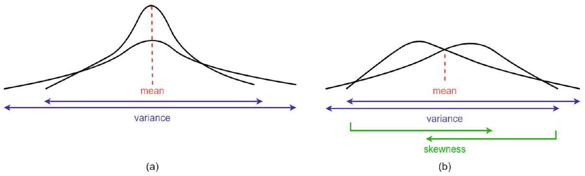
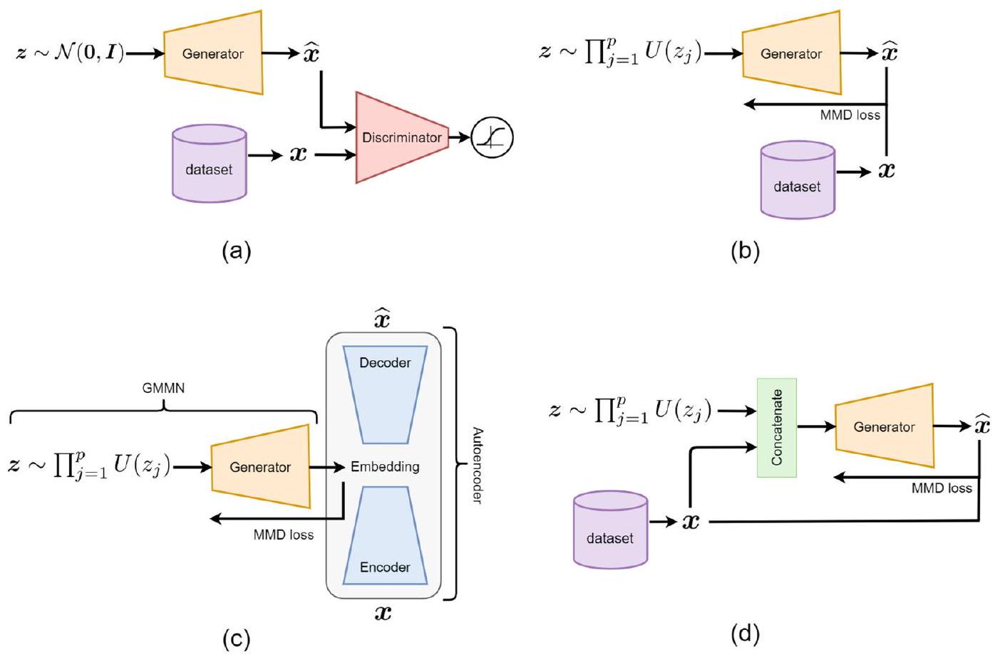
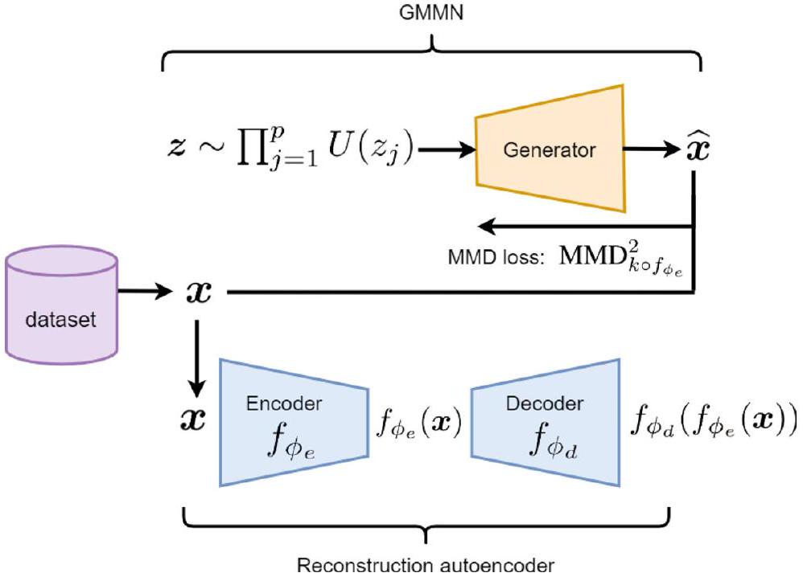

導論：怎麼量測「兩包資料像不像」
▼這一章要解決的問題：怎麼比較兩個分布
想像你手上有兩包資料——一包是真實資料，一包是模型生成的資料。你怎麼知道這兩包資料「夠像」？這正是本章要解決的核心問題：量測兩個機率分布之間的差異。
這個問題應用很廣：可以拿來當生成模型的訓練目標（讓生成分布逼近真實分布）、可以拿來做領域轉換（domain adaptation）、也可以拿來做統計檢定（兩包資料是不是來自同一個母體）。量測分布差異的方法有很多種：KL 散度（Kullback-Leibler divergence）、JS 散度（Jensen-Shannon divergence）、HSIC（Hilbert-Schmidt Independence Criterion）、Q-Q plot、Sinkhorn divergence……本章聚焦在其中一種特別重要的方法：最大平均差異（Maximum Mean Discrepancy, MMD），也叫核二樣本檢定（kernel two-sample test）。
MMD 的核心想法（先劇透，kp2 會展開講）
MMD 的邏輯很直覺：如果兩個分布完全相同，它們的所有動差（moment）——平均值、變異數、偏度……都必須相同。反過來說，只要有任何一個動差不一樣，兩個分布就不可能完全相同。但動差有無限多階，全部算一遍不可行。MMD 聰明的地方在於：把資料映射到一個特殊空間（RKHS）之後，只需要比較「第一動差」（也就是平均值），就等價於比較了輸入空間裡的所有動差。這讓「比較兩個分布」這件事從「算無限多個數字」變成「算一個平均值的差異」——這是本章最重要的一次概念跳躍，kp2–kp4 會逐步拆解。
生成模型如何用上 MMD：GMMN
生成動差匹配網路（Generative Moment Matching Network, GMMN） 是 2015 年提出的生成模型，它的想法是：讓一個神經網路生成器輸出的資料分布，跟訓練資料的分布之間的 MMD 越小越好——直接把 MMD 當成訓練用的損失函數。
跟同一時期崛起的 GAN（生成對抗網路） 相比，GMMN 的關鍵差異在於：GAN 用一個判別器（discriminator）去區分真假資料，訓練上是一個對抗式的極大極小賽局；GMMN 完全不需要判別器，直接用 MMD 這個核方法算出的距離當損失函數，是非對抗式的訓練。這個差異會在 kp6 具體展開。
這條技術線後來怎麼了
GMMN 概念優雅，但生成品質與可擴展性都比不上 GAN，後來又被 VAE（變分自編碼器）、自回歸 Transformer、擴散模型（diffusion model）等方法超越。今天 GMMN 本身已經很少被直接使用，但 MMD 這個度量方法本身活得很好——它仍然廣泛用在領域轉換與統計檢定等任務上。這是本章反覆會呼應的主線：GMMN 這個模型過時了，但 MMD 這個工具沒有過時。
本章路線圖
跟著這張地圖走：
- §2 MMD 的直覺與公式（kp2–kp5）：從「為什麼只看平均值不夠」出發，一路推到 RKHS 裡的核技巧公式，以及 MMD 何時能當作真正的距離度量。
- §3 GMMN（kp6）：MMD 當損失函數，訓練一個生成器。
- §4 條件式 GMMN（kp7）：讓生成器可以指定「生成什麼類型」的資料。
- §5 找最好的核函數（kp8）：MMD GAN——把「選核函數」這件事也變成可學習、可對抗訓練的。
- §6 結論（kp9）：GMMN 的歷史定位。
口語小結：兩個分布像不像，理論上要比對所有動差；MMD 用「映射到 RKHS 後只比平均值」這招把不可行的問題變可行；GMMN 把 MMD 直接當生成模型的訓練損失，是 GAN 之外一條非對抗式的生成模型路線，雖然後來被更強的方法取代，但它背後的 MMD 工具至今仍在使用。
🤖 AI 生圖提示詞
WHAT（骨架）: 左中右三段式因果鏈。左：一串遞增到 ∞ 的圓圈（標 E[x],E[x²],E[x³],…,∞）加一個鎖頭圖示，代表「要比到無窮多動差」。中：一個粗箭頭標「映射到 RKHS」。右：RKHS 空間裡兩堆散點（藍/橘）各自被虛線圈出重心（均值嵌入 μφ(x)、μφ(y)），中間一條虛線標「MMD²＝這條距離的平方」。底部一條時間軸：GMMN 提出後分岔成兩條路徑——灰色虛線路徑淡出標「GMMN 漸漸少用」，綠色實線路徑持續延伸標「MMD 工具至今活躍」。 WHY（因果或反直覺）: 理論上要比較兩個分布的所有動差（無窮多項）才能確定它們相同，這在計算上不可行；MMD 的洞見是把資料映射到 RKHS 後，只需比較一個均值嵌入的距離，就等價於比較了輸入空間的所有動差——把「算不完」的死路變成「算得完」的活路。反直覺點：模型（GMMN）會隨時代淡出，但背後的度量工具（MMD）可以比模型本身活得更久。 MUST show（必備要素）: ① 左側無窮多動差鏈+鎖頭（不可行）；② 中間「映射到 RKHS」箭頭；③ 右側兩堆散點各自的均值嵌入點與距離線（MMD²）；④ 底部 GMMN 淡出 vs MMD 持續的分岔時間軸。 AVOID（禁止）: 不要放完整 LaTeX 算式字串；不要讓左右兩側視覺份量失衡（死路要看起來卡住、活路要看起來簡潔可行）；不要省略底部的「模型淡出 vs 工具持續」分岔。 STYLE: flat vector, viewBox 720×380, 靛紫主題（主 #4f46e5、深 #3730a3、淺底 #eeecff/#f5f4ff），白底，Arial，紅 #e53e3e（不可行）、綠 #16a34a（可行/持續）、灰 #94a3b8（淡出），圓角、粗線條、無陰影無漸層。
本章要解決的核心問題是什麼？
GMMN 與 GAN 最關鍵的訓練方式差異是？
MMD 讓「比較所有動差」這件不可行的事變可行，關鍵招數是什麼？
關於 GMMN 與 MMD 今天的地位，文中的描述是？
MMD 的直覺：只比平均值不夠，要比到「所有動差」
▼從「比平均值」開始，但很快就不夠用
假設你有兩包樣本 $\{x_i\}_{i=1}^n\sim P_x$ 與 $\{y_j\}_{j=1}^m\sim P_y$，想知道 $P_x$ 跟 $P_y$ 是不是同一個分布。最直覺的做法：算兩包樣本的平均值差 $\mathbb{E}[x]-\mathbb{E}[y]$。
但這樣不夠——兩個分布可能平均值完全相同，變異數卻差很多（見原文 Fig. 1a：一個分布集中、一個分布分散，但中心點一樣）。變異數跟第二動差 $\mathbb{E}[x^2]$ 有關（變異數 $=\mathbb{E}[x^2]-(\mathbb{E}[x])^2$），所以要多比一項：把樣本也做個變換 $x\mapsto[x,x^2]^\top$，同時比較 $\mathbb{E}[x]-\mathbb{E}[y]$ 和 $\mathbb{E}[x^2]-\mathbb{E}[y^2]$。
但這樣還是不夠——兩個分布可能平均值、變異數都一樣，但偏度（skewness，跟第三動差有關） 不同（原文 Fig. 1b：一個分布左偏、一個右偏，但中心與離散程度看起來一樣）。
動差要比到無窮多階，理論上才算「完全比較」
這個邏輯可以一直往下推：均值不夠比變異數、變異數不夠比偏度、偏度不夠比峰度……理論上要比到所有動差才能保證兩個分布完全相同。這就是 Proposition 1：
$$ P_x=P_y \Longleftrightarrow \mathbb{E}[x^i]=\mathbb{E}[y^i],\ \forall i\in\{1,2,\ldots,\infty\}. \tag{1} $$
問題來了：動差有無限多階（$\mathbb{E}[x],\mathbb{E}[x^2],\mathbb{E}[x^3],\ldots$），全部算一遍不可行。
解法：映射到 RKHS，只比第一動差
MMD 的核心洞見是：把資料從輸入空間映射到一個叫做再生核希爾伯特空間（Reproducing Kernel Hilbert Space, RKHS）的特殊空間，在那個空間裡，只需要比較第一動差（也就是平均值），理論上就等價於比較了輸入空間裡的所有動差。這就是 Proposition 2：
$$ P_x=P_y \Longleftrightarrow \mathbb{E}[f(x)]=\mathbb{E}[f(y)],\ \forall f\in C(\mathcal{X}), \tag{2} $$
其中 $C(\mathcal{X})$ 是輸入空間 $\mathcal{X}$ 上所有有界連續函數構成的集合。這句話的白話翻譯：如果對「所有」可能的連續函數 $f$ 來說，$f(x)$ 的平均值都跟 $f(y)$ 的平均值相等，那 $x$ 跟 $y$ 的分布就一定相同（反之亦然）。而 RKHS 均值嵌入的差異，正好就是在檢查這件事——這就是 MMD（最大平均差異，也叫核二樣本檢定）的定義基礎，kp3 會給出正式定義。
數值示範：一個玩具例子看動差怎麼「騙過」平均值比較
考慮兩組樣本：$X=\{1,3\}$（平均值 2）、$Y=\{0,4\}$（平均值 2）。兩組平均值完全相同（$\mathbb{E}[x]-\mathbb{E}[y]=0$），如果只看平均值會誤判「兩者相同」。但看第二動差：$\mathbb{E}[x^2]=\frac{1^2+3^2}{2}=5$，$\mathbb{E}[y^2]=\frac{0^2+4^2}{2}=8$，差了 3——這就抓出了兩組樣本「離散程度不同」（$Y$ 的兩點離中心更遠）。這正是原文 Fig. 1a 想傳達的現象：均值相同不代表分布相同，必須繼續往高階動差查。
口語小結
| 只比較到第幾階動差 | 能分辨出什麼 | 分辨不出什麼 |
|---|---|---|
| 第 1 階（均值） | 中心位置不同 | 離散程度、形狀 |
| 第 1–2 階（均值+變異數） | 中心位置、離散程度不同 | 偏度、更高階形狀 |
| 第 1–3 階 | 加上偏度不同 | 峰度以上 |
| 全部無限階（Proposition 1） | 完全判定分布是否相同 | （理論保證，但算不出來） |
| RKHS 第一動差（Proposition 2） | 等價於全部無限階，且算得出來 | — |
一句話收尾：均值一樣不代表分布一樣，理論上要比到所有動差才算數；MMD 的聰明之處，是把「比無限多階動差」換成「在 RKHS 裡比一個均值」，難題就此變得可算。

🤖 AI 生圖提示詞
WHAT（骨架）: 上下兩排對比。上排：兩條鐘形曲線共用同一個中心點（均值相同），一條瘦高、一條矮胖（變異數不同），旁邊標「均值相同 ≠ 分布相同」。下排：兩條鐘形曲線中心與寬度都對齊，但一條左偏、一條右偏（偏度不同），旁邊標「仍然不同！要看第三動差」。 WHY（因果或反直覺）: 只比較均值無法判斷兩分布是否相同——上排展示均值相同但變異數不同的陷阱；下排進一步展示均值和變異數都相同、但偏度不同的更隱蔽陷阱。反直覺點：分布可以在多個層次上「表面相同」，卻在更細節的層次上完全不同，必須逐層往上比對動差才能真正判定。 MUST show（必備要素）: ① 上排兩條共中心但胖瘦不同的鐘形曲線，標示共同均值點；② 「均值相同 ≠ 分布相同」文字與警示箭頭；③ 下排兩條共中心共寬但左右偏斜方向相反的曲線；④ 「仍然不同！要看第三動差」文字與警示箭頭。 AVOID（禁止）: 不要放完整 LaTeX 算式；不要把兩排畫成一模一樣只是換色；曲線必須是平滑手繪的鐘形/偏態形狀，不能用簡單幾何圖形代替。 STYLE: flat vector, viewBox 720×380, 靛紫主題（主 #4f46e5、深 #3730a3、淺底 #eeecff/#fff7ed），白底，Arial，紅/橘警示色（#b91c1c、#c2410c）、綠色標示共同點（#16a34a），圓角、粗線條、無陰影無漸層。
- 拉動 8 根滑桿自由調整 X、Y 各 4 個點的位置。
- 按「載入範例 A」看均值相同但變異數不同的情形；按「載入範例 B」看均值變異數都相同、只有偏度不同的情形。
原文 Fig. 1a 展示的現象是？
Proposition 1 的內容是？
為什麼「比較所有動差」在實務上不可行？
Proposition 2 說「RKHS 中第一動差相等」等價於什麼？
MMD 的正式定義：對函數類別取上界
▼從直覺到正式定義
kp2 講完了「為什麼要比較所有動差、又為什麼可以用 RKHS 均值代替」的直覺，這裡給出正式的數學定義。
定義 1（MMD）：令 $\mathcal{F}$ 是一群把輸入映射到純量輸出的函數集合。兩個分布 $P_x$ 與 $P_y$ 之間的最大平均差異定義為：
$$ \operatorname{MMD}(P_x,P_y):=\sup_{f\in\mathcal{F}}\bigl(\mathbb{E}[f(\boldsymbol{x})]-\mathbb{E}[f(\boldsymbol{y})]\bigr). \tag{3} $$
白話翻譯：在函數類別 $\mathcal{F}$ 裡，找出那個「最能把兩個分布的期望值拉開」的函數 $f$，用它拉開的差距當作這兩個分布的距離。如果不管挑哪個函數 $f\in\mathcal{F}$，$f(x)$ 跟 $f(y)$ 的期望值都很接近，那 MMD 就會很小——直覺上代表兩個分布很像。
為什麼要「取上界（sup）」而不是隨便挑一個 $f$
如果隨便挑一個函數 $f$，比如 $f(x)=x$（就是普通的均值比較），可能剛好挑到一個「看不出差異」的函數，就像 kp2 提到的「均值一樣但變異數不同」的陷阱。取上界的用意是：在整個函數類別裡窮舉，找出最會挑毛病、最能凸顯差異的那個函數——只要有任何一個函數能看出差異，MMD 就不會是 0。這保證了 MMD 是一個「不放過任何差異」的量測方式（前提是 $\mathcal{F}$ 夠豐富，kp5 會講到這個「夠豐富」的條件叫做universal kernel）。
實務上：用樣本平均近似期望值
式 (3) 裡的期望值 $\mathbb{E}[f(x)]$ 需要知道 $P_x$ 的完整分布才能算，但實務上我們通常只有樣本。用蒙地卡羅近似（Monte Carlo approximation），把期望值換成樣本平均，就得到有偏經驗 MMD（biased empirical MMD）：
$$ \operatorname{MMD}(P_x,P_y)\approx\sup_{f\in\mathcal{F}}\left(\frac{1}{n}\sum_{i=1}^n f(\boldsymbol{x}_i)-\frac{1}{m}\sum_{j=1}^m f(\boldsymbol{y}_j)\right). \tag{4} $$
之所以叫「有偏」，是因為用有限樣本的平均去近似真實期望值本身就帶有統計偏誤（樣本數越多，偏誤越小）。
數值示範：小樣本手算一次
假設 $f(x)=x$（最簡單的恆等函數），樣本 $X=\{2,4,6\}$（$n=3$）、$Y=\{1,3\}$（$m=2$）：
$$ \frac{1}{3}(2+4+6)-\frac{1}{2}(1+3)=4-2=2. $$
如果換一個函數 $f(x)=x^2$：
$$ \frac{1}{3}(4+16+36)-\frac{1}{2}(1+9)=\frac{56}{3}-5\approx13.67. $$
同一組資料、換一個 $f$，算出的差距完全不同——這正是式 (4) 要對 $f\in\mathcal{F}$ 取上界的原因：不同的 $f$ 能看出不同層面的差異，取上界就是要找出「最能看出差異」的那一個。
口語小結
MMD 的正式定義，就是在一群函數裡找出最會挑毛病的那個函數，用它拉開的期望值差距當距離；實務上用樣本平均近似期望值，就是有偏經驗 MMD。這個定義本身還很抽象（$\mathcal{F}$ 是什麼、sup 怎麼算），kp4 會把它具體化成 RKHS 裡可以真正算出數字的公式。
🤖 AI 生圖提示詞
WHAT（骨架）: 一個函數集合 𝓕 的示意框，裡面畫 5 條不同形狀、不同顏色的抽象曲線代表候選函數 f₁…f₅，每條曲線旁配一個長條圖標示它「拉開兩分布期望值」的差距大小。其中一條（f*）用放大、加粗、綠色高亮，長條也最長，標示「被 sup 選中」。
WHY（因果或反直覺）: MMD 定義中的 sup_{f∈F} 不是隨機挑一個函數來比較，而是在整個函數家族裡窮舉，找出「最能拉開兩分布期望值差距」的那一個。反直覺點：多數候選函數其實看不太出差異（差距小），只有極少數函數能真正暴露分布間的不同——sup 保證我們用的是「最挑剔」的判準，而不是隨便一個可能失效的判準。
MUST show（必備要素）: ① 至少 5 條不同形狀曲線代表函數集合裡的候選；② 每條曲線旁的差距長條，長度不一；③ 其中一條被明確高亮標示「差距最大→被 sup 選中」；④ 底部一句話點出 sup 是窮舉挑選、不是隨機選擇。
AVOID（禁止）: 不要用完全相同形狀只是換色的曲線（要看起來真的是不同函數）；不要放完整 LaTeX 算式字串；不要讓被選中的函數不明顯（必須一眼看出誰是贏家）。
STYLE: flat vector, viewBox 720×360, 靛紫主題（主 #4f46e5、深 #3730a3、淺底 #f5f4ff），白底，Arial，灰/淡紫表示普通候選（#94a3b8、#818cf8、#c4b5fd、#a5b4fc），綠色 #16a34a 標示勝出者，圓角、粗線條、無陰影無漸層。- 拉動 6 根滑桿改變 $X,Y$ 各 3 個樣本點。
- 觀察 readout 中 4 個候選函數各自算出的差距，被高亮的是目前最大值（最接近 sup 的候選）。
MMD 的定義式 (3) 中，取 $\sup_{f\in\mathcal{F}}$ 的用意是？
式 (4) 為什麼稱為「有偏經驗 MMD」？
若用不同的 $f$ 計算式 (4)，可能得到不同的差距數值，這說明了什麼？
把 MMD 具體化：RKHS 均值嵌入與核技巧
▼讓函數類別 $\mathcal{F}$ 有具體形狀：RKHS 的單位球
kp3 定義的 MMD 還很抽象——函數類別 $\mathcal{F}$ 到底是什麼？這裡把 $\mathcal{F}$ 具體設成 RKHS 裡的單位球，這樣 $f\in\mathcal{F}$ 就對應到一個映射函數 $\phi:\boldsymbol{x}\mapsto\phi(\boldsymbol{x})$，把資料從輸入空間映射到 RKHS。
資料映射後：$\{\boldsymbol{x}_i\}_{i=1}^n\mapsto\{\phi(\boldsymbol{x}_i)\}_{i=1}^n$，$\{\boldsymbol{y}_j\}_{j=1}^m\mapsto\{\phi(\boldsymbol{y}_j)\}_{j=1}^m$。把這代入式 (4)，並定義 RKHS 裡的均值嵌入（mean embedding）：
$$ \mu_{\phi(\boldsymbol{x})}:=\frac{1}{n}\sum_{i=1}^n\phi(\boldsymbol{x}_i),\qquad \mu_{\phi(\boldsymbol{y})}:=\frac{1}{m}\sum_{j=1}^m\phi(\boldsymbol{y}_j). \tag{6,7} $$
在 RKHS 這個特殊空間的性質下（sup 被均值嵌入本身吸收，細節超出本章範圍），MMD 的平方可以直接寫成兩個均值嵌入的歐式距離平方：
$$ \operatorname{MMD}^2(P_x,P_y)\approx\|\mu_{\phi(\boldsymbol{x})}-\mu_{\phi(\boldsymbol{y})}\|_2^2. \tag{8} $$
這就是 kp2 提到的「比較 RKHS 裡的第一動差」的具體算式：兩包資料映射到 RKHS 後，各自取平均，量兩個平均點之間的距離。
核技巧：不用真的算出 $\phi(x)$，直接算內積
把式 (8) 展開（利用內積的雙線性）：
$$ \operatorname{MMD}^2(P_x,P_y)\approx\frac{1}{n^2}\sum_{i,j}\phi(\boldsymbol{x}_i)^\top\phi(\boldsymbol{x}_j)+\frac{1}{m^2}\sum_{i,j}\phi(\boldsymbol{y}_i)^\top\phi(\boldsymbol{y}_j)-\frac{2}{nm}\sum_{i,j}\phi(\boldsymbol{x}_i)^\top\phi(\boldsymbol{y}_j). \tag{9} $$
注意到整個式子裡，$\phi$ 永遠是成對出現、做內積（$\phi(\cdot)^\top\phi(\cdot)$）。這時候可以套用核函數的定義：$k(\boldsymbol{x},\boldsymbol{y}):=\phi(\boldsymbol{x})^\top\phi(\boldsymbol{y})$（式 10），也就是核技巧（kernel trick）——不需要真的把資料映射到（可能是無限維的）RKHS 再算內積，只要有一個核函數 $k(\cdot,\cdot)$，就能直接算出內積的值。代入後，式 (9) 化簡成完全可計算的形式：
$$ \operatorname{MMD}^2(P_x,P_y)\approx\frac{1}{n^2}\sum_{i,j}^n k(\boldsymbol{x}_i,\boldsymbol{x}_j)+\frac{1}{m^2}\sum_{i,j}^m k(\boldsymbol{y}_i,\boldsymbol{y}_j)-\frac{2}{nm}\sum_{i,j} k(\boldsymbol{x}_i,\boldsymbol{y}_j). \tag{11} $$
這是有偏經驗 MMD。也有無偏版本（把 $\frac{1}{n^2}\sum_{i,j}^n$ 換成 $\frac{1}{n(n-1)}\sum_{i\neq j}^n$，扣掉 $i=j$ 的自己跟自己配對項）：
$$ \operatorname{MMD}^2(P_x,P_y)\approx\frac{1}{n(n-1)}\sum_{i\neq j}k(\boldsymbol{x}_i,\boldsymbol{x}_j)+\frac{1}{m(m-1)}\sum_{i\neq j}k(\boldsymbol{y}_i,\boldsymbol{y}_j)-\frac{2}{nm}\sum_{i,j}k(\boldsymbol{x}_i,\boldsymbol{y}_j). \tag{12} $$
數值示範：$X=\{1,2\}$，$Y=\{2,3\}$，RBF 核 $\sigma=1$
用高斯核 $k(a,b)=\exp\!\big(-\frac{(a-b)^2}{2\sigma^2}\big)$，$\sigma=1$：
$k(1,1)=1$，$k(2,2)=1$，$k(1,2)=k(2,1)=\exp(-0.5)\approx0.6065$
$k(2,2)=1$，$k(3,3)=1$，$k(2,3)=k(3,2)=\exp(-0.5)\approx0.6065$
$k(1,2)=\exp(-0.5)\approx0.6065$，$k(1,3)=\exp(-2)\approx0.1353$，$k(2,2)=1$，$k(2,3)\approx0.6065$
代入式 (11)（$n=m=2$）：
$$ \underbrace{\frac{1}{4}(1+0.6065+0.6065+1)}_{\text{XX 項}\approx0.8033}+\underbrace{\frac{1}{4}(1+0.6065+0.6065+1)}_{\text{YY 項}\approx0.8033}-\underbrace{\frac{2}{4}(0.6065+0.1353+1+0.6065)}_{\text{XY 項}\approx1.1742} $$
$$ \operatorname{MMD}^2\approx0.8033+0.8033-1.1742\approx0.4324. $$
這組數字跟原文習題 1 完全對應——你可以自己動手代公式驗算一次。
口語小結
式 (8) 把抽象的 MMD 具體化成「兩個均值嵌入的距離」；核技巧讓我們不用真的把資料映射到 RKHS，只要有核函數 $k$，直接代入兩兩樣本的核值就能算出 MMD²——這是 MMD 之所以「算得出來」的關鍵一步。
🤖 AI 生圖提示詞
WHAT（骨架）: 左側原始空間兩堆散點（藍色 x 資料、橘色 y 資料）。中間箭頭標「映射 φ」。右側 RKHS 空間裡對應的兩堆點，各自用虛線圈標出均值嵌入 μφ(x)、μφ(y)，兩均值點間畫一條虛線標「MMD²＝這條距離²」。底部畫一條弧形捷徑箭頭，從原始空間兩堆點直接繞到右側，繞過中間的 φ 映射，標「核技巧：k(x,y)=φ(x)ᵀφ(y)，不用真的映射，直接算內積」。 WHY（因果或反直覺）: MMD² 具體化成 RKHS 中兩個均值嵌入點的距離平方；核技巧的反直覺之處在於——我們不需要真的把資料映射到（可能是無限維的）RKHS 空間再算距離，只要有一個核函數 k，就能直接算出等價的內積結果，繞過中間映射這一步。 MUST show（必備要素）: ① 左側兩堆不同顏色散點；② 中間「映射 φ」箭頭；③ 右側對應的兩堆點與各自的均值嵌入圈；④ 均值點之間的距離線標 MMD²；⑤ 底部繞過中間映射的捷徑弧形箭頭，標出核技巧公式的白話說明。 AVOID（禁止）: 不要放完整 LaTeX 算式（核技巧那句用簡短符號 k(x,y)=φ(x)ᵀφ(y) 即可，不展開更多）；不要省略捷徑箭頭（這是本圖最重要的反直覺元素）；不要讓左右兩堆散點看起來像同一種顏色。 STYLE: flat vector, viewBox 720×380, 靛紫主題（主 #4f46e5、深 #3730a3），藍色 #60a5fa／橘色 #fb923c 區分兩堆資料，綠色 #16a34a 標示距離，橘紅 #ea580c 標示捷徑箭頭，白底，Arial，圓角、粗線條、無陰影無漸層。
- 拉動 6 個滑桿改變樣本、拉 σ 改變核頻寬。
- 按「設 Y=X」看兩組資料完全相同時的 MMD²。
- 勾選切換有偏/無偏版本比較差異。
式 (8) 說明了 $\operatorname{MMD}^2(P_x,P_y)$ 近似等於什麼？
核技巧（kernel trick）在這裡扮演的角色是？
式 (11) 有偏版本與式 (12) 無偏版本的主要差異是？
數值示範中，$X=\{1,2\}$、$Y=\{2,3\}$ 用 RBF 核（$\sigma=1$）算出的 $\operatorname{MMD}^2$ 約為？
MMD 什麼時候才算「真正的距離」：universal kernel
▼不是隨便選個核函數都行
kp4 給出了可計算的 MMD² 公式，但這裡有個重要但容易被忽略的條件：MMD 要能拿來當作「距離度量」（也就是 MMD=0 若且唯若兩分布相同），核函數 $k$ 必須是 universal kernel（也叫 characteristic kernel）。如果選錯核函數，可能出現「兩個分布明明不同，MMD 卻算出 0」的假象——這就失去了度量的意義。
Universal kernel 的定義
定義 2（Universal kernel）：令 $C(\mathcal{X})$ 是輸入空間 $\mathcal{X}$ 上所有連續函數的集合。一個連續核函數 $k$（定義在緊緻度量空間 $\mathcal{X}$ 上）稱為 universal，如果它對應的 RKHS $\mathcal{H}$ 在 $C(\mathcal{X})$ 中是稠密的——白話講：對任何連續函數 $f\in C(\mathcal{X})$、任何小誤差 $\epsilon\gt 0$，都能在 $\mathcal{H}$ 裡找到一個函數 $g$，使得 $\|f-g\|_\infty\leq\epsilon$（也就是說，$\mathcal{H}$ 這個空間「夠豐富」，能任意逼近任何連續函數）。
根據 Stone-Weierstrass 定理，universal kernel 的泰勒展開式必須有無限多項。兩個常見例子：
- RBF 核（高斯核）：$k(\boldsymbol{x},\boldsymbol{y}):=\exp\!\big(-\gamma\|\boldsymbol{x}-\boldsymbol{y}\|_2^2\big)$（式 13），其中 $\gamma:=1/\sigma^2$。
- Laplacian 核：$k(\boldsymbol{x},\boldsymbol{y}):=\exp\!\big(-\gamma\|\boldsymbol{x}-\boldsymbol{y}\|_1\big)$（式 14），用曼哈頓距離。
這兩個核都因為有指數運算，泰勒展開有無限多項，所以是 universal。反例：多項式核不是 universal——它的展開式項數有限。
Proposition 3：universal kernel 下，MMD=0 若且唯若分布相同
$$ \operatorname{MMD}(P_x,P_y)=0 \Longleftrightarrow P_x=P_y. \tag{15} $$
證明的關鍵一步（往回推：假設 MMD=0，證明 $P_x=P_y$）：MMD=0 代表兩個均值嵌入相等 $\mu_{\phi(x)}=\mu_{\phi(y)}$（式16）。因為 $\mathcal{H}$ 是 universal（定義2），對任意連續函數 $f$，都能找到 $g\in\mathcal{H}$ 使 $\|f-g\|_\infty\leq\epsilon$。把 $|\mathbb{E}[f(x)]-\mathbb{E}[f(y)]|$ 拆成三段（式18）：
$$ |\mathbb{E}[f(x)]-\mathbb{E}[g(x)]|+|\mathbb{E}[g(x)]-\mathbb{E}[g(y)]|+|\mathbb{E}[g(y)]-\mathbb{E}[f(y)]|. $$
第一、三項因為 $\|f-g\|_\infty\leq\epsilon$，各自 $\leq\epsilon$。第二項因為 $g\in\mathcal{H}$、且均值嵌入已相等（$\langle g,\mu_{\phi(x)}-\mu_{\phi(y)}\rangle_\mathcal{H}=0$），所以恰好等於 0。三項加總 $\leq 2\epsilon$，對任意小的 $\epsilon$ 都成立，代表 $|\mathbb{E}[f(x)]-\mathbb{E}[f(y)]|=0$ 對所有 $f\in C(\mathcal{X})$ 成立——根據 Proposition 2，這正是 $P_x=P_y$ 的定義。
MMD 的另一個性質：MMD 有下界（0）但沒有上界——分布相同時 MMD 是 0，分布差異越大，MMD 就越大，但沒有一個固定的最大值。
數值示範：兩個一維高斯分布的解析 MMD²
考慮 $P=\mathcal{N}(0,1)$、$Q=\mathcal{N}(1,2)$，高斯核 $\gamma=1$。有一個閉式公式可用：對 $\mathcal{N}(\mu,\sigma^2)$，$\mathbb{E}_{x,x'\sim\mathcal{N}(\mu,\sigma^2)}[k(x,x')]=\dfrac{1}{\sqrt{1+2\sigma^2/\gamma^2}}$。
$X$ 項（$\sigma_P^2=1$）：$\dfrac{1}{\sqrt{1+2}}=\dfrac{1}{\sqrt3}\approx0.5774$
$Y$ 項（$\sigma_Q^2=2$）：$\dfrac{1}{\sqrt{1+4}}=\dfrac{1}{\sqrt5}\approx0.4472$
交叉項 $\mathbb{E}_{x\sim P,y\sim Q}[k(x,y)]$ 則用 $x-y\sim\mathcal{N}(\mu_P-\mu_Q,\sigma_P^2+\sigma_Q^2)=\mathcal{N}(-1,3)$ 的核期望公式：$\dfrac{1}{\sqrt{1+2\times3/1}}\exp\!\big(-\dfrac{(\mu_P-\mu_Q)^2}{2(\gamma^2+2\times3)}\big)$——原文習題 2 留給讀者自己代入算完整數字，這裡先建立「兩個高斯分布之間存在解析 MMD² 公式」這個直覺，不必每次都靠取樣近似。
口語小結
MMD 要能當「真正的距離」，核函數必須是 universal（RBF、Laplacian 可以，多項式核不行）；在這個條件下，MMD=0 精確地等價於兩分布相同，證明的核心是把誤差拆三段、用 universal 的稠密性質把每段都壓到任意小。
🤖 AI 生圖提示詞
WHAT（骨架）: 左右對比兩個方框。左「Universal kernel（如 RBF）」：7-8 條交錯重疊的曲線層層疊疊填滿整個區域，標「夠豐富，能任意逼近任何連續函數」。右「非 Universal（如多項式核）」：只有 2-3 條簡單曲線，明顯有大片空白覆蓋不到，標「不夠豐富，MMD=0 不保證分布相同」，並在右上角加一個橘色驚嘆號警示圖示。底部一行文字點出風險：用非 universal 核可能誤判不同分布為相同。 WHY（因果或反直覺）: MMD 要能當作「真正的距離度量」（MMD=0 若且唯若分布相同），核函數必須是 universal（能任意逼近任何連續函數的豐富核）；若核函數不夠豐富（如多項式核），MMD 這把尺會失準——即使兩個分布明明不同，也可能被誤判為 MMD=0。反直覺點：不是隨便一個核函數都能拿來做分布比較，「夠不夠豐富」直接決定這把尺可不可信。 MUST show（必備要素）: ① 左側密集交錯、填滿區域的曲線群；② 右側稀疏、明顯留白的曲線群；③ 右側的橘色警示圖示（驚嘆號）；④ 左右各自的判準文字（夠豐富 vs 不夠豐富）；⑤ 底部風險提示文字。 AVOID（禁止）: 不要放完整 LaTeX 算式；不要讓左右兩側曲線密度看起來差不多（必須一眼看出「密 vs 疏」的對比）；不要省略警示圖示。 STYLE: flat vector, viewBox 720×360, 靛紫主題（主 #4f46e5、深 #3730a3、淺底 #eeecff）對比警示橘色系（#ea580c、#fb923c、#fff7ed），白底，Arial，圓角、粗線條、無陰影無漸層。
- 拉 shift 滑桿把 $Y$ 第4點從 $X$ 對應值往外移，觀察目前位置在三條曲線上的落點（垂直虛線）。
- 拉 σ 看頻寬如何影響曲線陡峭程度。
Universal kernel 的直覺定義是？
下列哪個核函數不是 universal kernel？
Proposition 3 的證明中，把 $|\mathbb{E}[f(x)]-\mathbb{E}[f(y)]|$ 拆成三項，其中「中間項」為什麼恰好等於 0？
若選用非 universal 的核函數（如多項式核）計算 MMD，可能發生什麼問題？
GMMN：用 MMD 當損失函數的生成模型
▼回顧 GAN，對照 GMMN
生成對抗網路（GAN） 的結構（原文 Fig. 2a）：一個生成器（generator）吃隨機雜訊、輸出生成資料；一個判別器（discriminator）嘗試分辨資料是真是假；兩者在極大極小賽局裡同時訓練。
生成動差匹配網路（GMMN）（Fig. 2b）把判別器整個拿掉，換成 MMD 損失函數——直接量測「生成資料的分布」跟「真實資料的分布」之間的 MMD，把這個 MMD 當作訓練損失去最小化。沒有對抗、沒有判別器，是一個更直接的訓練方式。
GMMN 的輸入與輸出
GMMN 是一個神經網路生成器，輸入是隨機雜訊向量 $\boldsymbol{z}=[z_1,\ldots,z_p]^\top$，每個維度是獨立同分布（i.i.d.）的均勻分布：
$$ \mathbb{P}(\boldsymbol{z})=\prod_{j=1}^p U(z_j), \tag{19} $$
其中 $\boldsymbol{z}\in[-1,1]^p$ 或 $\boldsymbol{z}\in[0,1]^p$（不同文獻用不同範圍），$p$ 是雜訊向量的維度（也就是輸入層神經元數）。網路吃進 $\boldsymbol{z}$，輸出生成資料 $\widehat{\boldsymbol{x}}\in\mathbb{R}^d$。
訓練損失：直接用 kp4 的 MMD² 公式
假設訓練資料集是 $\{\boldsymbol{x}_i\}_{i=1}^n$，GMMN 每輪生成 $m$ 筆資料 $\{\widehat{\boldsymbol{x}}_j\}_{j=1}^m$。GMMN 的損失函數就是 kp4 式 (11) 的 MMD²：
$$ \mathcal{L}:=\operatorname{MMD}^2(P_x,P_{\widehat{x}})\approx\frac{1}{n^2}\sum_{i,j}^n k(\boldsymbol{x}_i,\boldsymbol{x}_j)+\frac{1}{m^2}\sum_{i,j}^m k(\widehat{\boldsymbol{x}}_i,\widehat{\boldsymbol{x}}_j)-\frac{2}{nm}\sum_{i,j}k(\boldsymbol{x}_i,\widehat{\boldsymbol{x}}_j). \tag{20} $$
這個損失可以用 mini-batch 訓練（每次生成 $m$ 筆）。最小化這個損失，會把 $\operatorname{MMD}(P_x,P_{\widehat{x}})$ 推向 0——而根據 kp5 的 Proposition 3，MMD 趨近 0 就代表生成分布 $P_{\widehat{x}}$ 趨近訓練資料分布 $P_x$。這正是「用 MMD 當損失函數能訓練出好生成器」的理論根據——kp2–kp5 鋪的路，到這裡收成果實。
一個變體：在自編碼器的潛在空間裡做 GMMN
還有一種做法（Fig. 2c）：先訓練一個重建自編碼器（用反向傳播、逐層貪婪訓練或信念傳播都可以），然後讓 GMMN 的輸出目標不是原始資料，而是自編碼器潛在層（code space）的分布。也就是說 GMMN 學會生成「看起來像潛在編碼」的向量，這些向量再交給解碼器還原成資料。
三個實務眉角
- 核函數必須是 universal（呼應 kp5）——RBF、Laplacian 可以，多項式核不行，否則 MMD 不再是有效的距離度量。
- 經驗上用 $\sqrt{\operatorname{MMD}^2(P_x,P_{\widehat{x}})}$ 當損失，生成品質會更好（開根號後梯度的尺度更平順）。
- 隱藏層建議用 ReLU 激活函數，輸出層依生成資料範圍選（例如 sigmoid 讓輸出落在 $[0,1]$）。
數值示範：一個極小玩具訓練損失
假設真實資料 $X=\{1,2\}$、目前生成資料 $\widehat{X}=\{1.5,2.5\}$，用線性核 $k(a,b)=a\cdot b$。代入式 (20)：
$$ \text{XX 項}=\frac{1}{4}(1\cdot1+1\cdot2+2\cdot1+2\cdot2)=\frac{1}{4}(1+2+2+4)=\frac{9}{4}=2.25 $$ $$ \widehat{X}\widehat{X}\text{ 項}=\frac{1}{4}(1.5\cdot1.5+1.5\cdot2.5+2.5\cdot1.5+2.5\cdot2.5)=\frac{1}{4}(2.25+3.75+3.75+6.25)=\frac{16}{4}=4 $$ $$ \text{交叉項}=\frac{2}{4}(1\cdot1.5+1\cdot2.5+2\cdot1.5+2\cdot2.5)=\frac{2}{4}(1.5+2.5+3+5)=\frac{2}{4}\times12=6 $$ $$ \mathcal{L}=2.25+4-6=0.25. $$
這對應原文習題 3——線性核雖然不是 universal（無法保證 MMD=0 才代表分布相同），但作為一個簡化的手算範例，可以清楚看到式 (20) 每一項怎麼算出來的。
口語小結
GMMN 把 GAN 的判別器換成 MMD 損失函數，用「讓生成分布逼近真實分布」的 MMD 當作直接可微分的訓練目標；只要核函數選對（universal），最小化這個損失在理論上保證生成分布會逼近訓練資料分布。

🤖 AI 生圖提示詞
WHAT（骨架）: 左右對比兩個網路結構方框圖。左「GAN」：生成器方框與判別器方框之間畫雙向對抗箭頭（紅色，一去一回），標「互相對抗：真假賽局」。右「GMMN」：生成器方框，單向箭頭直接連到「MMD 損失」方框（標「比較生成 vs 真實」），無判別器。左右下方各自標一句話：GAN「靠打假賽局逼出好結果」、GMMN「靠直接量距離逼出好結果」。 WHY（因果或反直覺）: 兩者都是要訓練出好的生成器，但機制完全不同——GAN 需要同時訓練並平衡兩個互相對抗的網路（生成器與判別器）；GMMN 拿掉判別器，直接用 MMD 這個距離度量當損失函數，是非對抗、單向的訓練流程。反直覺點：不透過「對抗打假」也能訓練出生成模型，只要有一把夠準的距離尺（MMD）就够。 MUST show（必備要素）: ① 左側 GAN 的生成器+判別器方框與雙向對抗箭頭；② 右側 GMMN 的生成器方框+單向箭頭指向 MMD 損失方框；③ 右側明確標示「判別器整個拿掉了」；④ 左右下方各自的一句話總結（打假賽局 vs 直接量距離）。 AVOID（禁止）: 不要放完整 LaTeX 算式；不要讓 GMMN 這側看起來還留有判別器的痕跡；不要省略雙向對抗箭頭（這是 GAN 機制的核心視覺）。 STYLE: flat vector, viewBox 720×340, 左側 GAN 用紅色警示系（#e53e3e、#fef2f2）表示對抗張力，右側 GMMN 用靛紫主題（#4f46e5、#3730a3、#eeecff）搭配綠色（#16a34a）標示 MMD 損失方框，白底，Arial，圓角、粗線條、無陰影無漸層。
- 拉滑桿手動改變生成點，觀察損失即時變化。
- 按「模擬訓練一步」讓每個生成點朝最近的真實點移動一小步（簡化示範，非真正梯度下降）。
GMMN 相較於 GAN，結構上最大的改變是？
GMMN 的損失函數 $\mathcal{L}$（式20）本質上是什麼？
為什麼最小化 GMMN 的 MMD 損失，理論上能讓生成分布逼近真實分布？
關於訓練 GMMN 的實務建議，下列何者正確？
條件式 GMMN：讓生成器聽指令生成
▼GMMN 的限制：生成不受控制
kp6 的 GMMN 只會生成「像訓練資料整體分布」的資料，沒辦法指定「我要生成某一類的資料」。條件式 GMMN（Conditional GMMN） 解決這個問題：讓生成器額外接收「side information」（側邊資訊，如類別標籤或參考樣本），生成特定類別或特定模式的資料。
做法一：把側邊資訊跟雜訊「接起來」或「加起來」
給定一個參考資料實例 $\boldsymbol{x}\in\mathbb{R}^d$（希望生成類似這個實例風格的資料），把它跟雜訊向量 $\boldsymbol{z}$（分布同 kp6 式19）合併，有兩種做法：
接起來（concatenate）：
$$ \widetilde{\boldsymbol{x}}=[\boldsymbol{x},\boldsymbol{z}]^\top\in\mathbb{R}^{d+p}. \tag{21} $$
加起來（add）：如果 $p=d$（維度相同），可以直接相加：
$$ \widetilde{x}=x+z\in\mathbb{R}^d. \tag{22} $$
把 $\widetilde{\boldsymbol{x}}$（或 $\widetilde{x}$）餵進神經網路（結構見原文 Fig. 2d），輸出生成資料 $\widehat{\boldsymbol{x}}\in\mathbb{R}^d$。訓練損失一樣是 kp6 式 (20) 的 MMD²，讓生成分布逼近訓練資料分布。隱藏層一樣建議用 ReLU。
測試階段：使用者挑一個資料實例 $\boldsymbol{x}$（例如一張房子的照片）餵進去，網路會生成「風格類似但不是訓練集裡任何一張」的新資料——某種意義上是訓練集裡所有房子照片的內插結果。
做法二：用類別標籤條件生成
受條件式 GAN 啟發，也可以直接用類別標籤當條件，而不是用某個具體資料實例。令 $\boldsymbol{\ell}\in\{0,1\}^c$ 是類別標籤的 one-hot 編碼（$c$ 是類別數），把標籤跟雜訊接起來：
$$ \widetilde{\boldsymbol{x}}=[\boldsymbol{\ell},\boldsymbol{z}]^\top\in\mathbb{R}^{c+p}. \tag{23} $$
在這個設定下，MMD 損失要針對每個類別分別最小化——對每一個類別標籤，比較「該類別的訓練資料」與「該類別條件下生成的資料」之間的 MMD，逐類最小化。測試階段，使用者選一個類別標籤餵進網路，就能生成那個類別的資料（例如選「房子」類別，生成一張新的房子照片）。
數值示範：兩種條件下各算一次 MMD²（呼應原文習題 4 的精神）
假設條件 1 下，真實樣本 $\boldsymbol{y}_1=[1,0]$、$\boldsymbol{y}_2=[1.5,0.5]$，生成樣本 $\widehat{\boldsymbol{y}}_1=[0.7,0]$、$\widehat{\boldsymbol{y}}_2=[1.1,0.3]$，用線性核 $k(\boldsymbol{a},\boldsymbol{b})=\boldsymbol{a}^\top\boldsymbol{b}$。用無偏估計（$n=m=2$，同分布內排除自我配對）：
$$ \text{YY 項}=\frac{1}{2\times1}\times2\times(\boldsymbol{y}_1^\top\boldsymbol{y}_2)=\boldsymbol{y}_1^\top\boldsymbol{y}_2=1\times1.5+0\times0.5=1.5 $$ $$ \widehat{Y}\widehat{Y}\text{ 項}=\widehat{\boldsymbol{y}}_1^\top\widehat{\boldsymbol{y}}_2=0.7\times1.1+0\times0.3=0.77 $$ $$ \text{交叉項}=\frac{1}{4}\sum_{i,j}\boldsymbol{y}_i^\top\widehat{\boldsymbol{y}}_j=\frac{1}{4}\big[(1)(0.7)+(1)(1.1)+(1.5)(0.7){+}(0)(0){+}(1.5)(1.1){+}(0.5)(0.3)\big] $$
（此處省略逐項細算過程，讀者可依式 12 的無偏公式自行代入驗算）條件 2 下同法再算一次，最後把兩個條件的 MMD² 取平均，就是條件式 MMD（CMMD²）——這正是把 kp6 單一分布的 MMD 損失，擴展成「對每個條件分別算、再平均」的做法。
口語小結
條件式 GMMN 靠「把條件資訊（參考實例或類別標籤）跟雜訊接起來或加起來」讓生成器聽懂指令；訓練損失還是 MMD，只是要針對每個條件分別計算——這是 kp6 的直接擴展，沒有引入新的理論工具，只是多了一個「條件輸入」的維度。
🤖 AI 生圖提示詞
WHAT（骨架）: 上方兩個輸入源——左「雜訊 z」（隨機點雲圖示）、右「條件資訊」（簡筆房子輪廓或 one-hot 標籤方塊）。中間一個「合併」方框標「串接 [x,z] 或 相加 x+z」。合併結果箭頭向下進入「生成器」方框。生成器下方分岔出兩條路徑，各自指向一個簡筆房子輪廓圖示（用不同顏色/形狀區分），標「條件A → 對應風格輸出」與「條件B → 另一種風格輸出」。右側加一句小結「不同條件 → 不同輸出」。 WHY（因果或反直覺）: 條件式 GMMN 讓同一個生成器網路，只要換一個條件輸入（不同的參考實例或類別標籤），就能生成完全不同風格/類別的資料。反直覺點：生成器本身結構沒變，純粹靠輸入端多接了一份條件資訊，就從「隨機生成」進化成「可控生成」——這說明生成器學到的是「風格」這個可條件化的概念，而不只是記住訓練分布的整體形狀。 MUST show（必備要素）: ① 雜訊 z 與條件資訊兩個輸入源；② 合併方式（串接或相加）的方框；③ 生成器方框；④ 至少兩條分岔路徑，展示「不同條件→不同風格輸出」的因果對應；⑤ 簡筆房子輪廓（不要寫實，只是示意用的簡單線框）。 AVOID（禁止）: 不要放完整 LaTeX 算式；不要把兩個條件的輸出畫成一模一樣（必須看得出風格/形狀差異）；不要用真實寫實的房子插圖，維持簡筆線條風格。 STYLE: flat vector, viewBox 720×380, 靛紫主題（主 #4f46e5、深 #3730a3、淺底 #f5f4ff）搭配橘色 #ea580c 標示條件資訊、綠色/橘色分別標示兩種條件輸出路徑，白底，Arial，圓角、粗線條、無陰影無漸層。
- 切換「串接」或「相加」模式。
- 拉滑桿改變 $x,z$ 的分量，觀察合併結果與圖示變化。
條件式 GMMN 與一般 GMMN 最主要的差異是？
式 (21) 與式 (22) 兩種合併方式的差異是？
用類別標籤條件生成時（式23），MMD 損失該如何計算？
條件式 GMMN 在理論工具上，相對於 kp6 的一般 GMMN 有何新增？
MMD GAN：把「選核函數」也變成可學習、可對抗的
▼固定核函數的限制
kp6、kp7 的 GMMN 都用固定的 RBF 核來算 MMD 損失：
$$ \underset{\theta}{\operatorname{minimize}}\ \operatorname{MMD}^2(P_x,P_{\widehat{x}}(\theta)), \tag{24} $$
其中 $\theta$ 是 GMMN 生成器的權重。但固定核函數的頻寬（bandwidth）等超參數，可能不是「最能凸顯真實與生成資料差異」的選擇——回想 kp3 定義 MMD 時取 $\sup_{f\in\mathcal{F}}$ 的精神：理論上應該在整個 universal kernel 的集合裡，找出最會挑毛病的那一個核函數。
把選核函數變成極大極小賽局
MMD GAN 的想法：不要固定核函數，讓核函數也參與最佳化——內層去找出讓 MMD 最大的核函數（最會挑毛病、最能揭露生成器的弱點）；外層生成器則要在這個「最挑剔的核函數」之下，還能讓 MMD 最小：
$$ \underset{\theta}{\operatorname{minimize}}\ \underset{k\in\mathcal{K}}{\operatorname{maximize}}\ \operatorname{MMD}_k^2(P_x,P_{\widehat{x}}(\theta)), \tag{25} $$
其中 $\mathcal{K}$ 是一群 characteristic（universal）核函數的集合（例如不同頻寬的 RBF、Laplacian 核）。這正是把 GMMN 的思路跟 GAN 的對抗式訓練結合——生成器（$\theta$）想騙過最挑剔的核函數，核函數則想盡辦法揭穿生成器。
窮舉所有核函數不可行：改用神經網路建模
直接窮舉 $\mathcal{K}$ 裡所有可能的核函數不現實。這裡用一個數學性質：如果 $f$ 是單射（injective）函數，$k$ 是 characteristic 核函數，那麼複合函數 $\widetilde{k}=k\circ f$ 也是 characteristic。既然如此，可以用另一個神經網路 $f_\phi$（權重 $\phi$）來建模這個 $f$，把式 (25) 改寫成：
$$ \underset{\theta}{\operatorname{minimize}}\ \underset{\phi}{\operatorname{maximize}}\ \operatorname{MMD}_{k\circ f_\phi}^2(P_x,P_{\widehat{x}}(\theta)). \tag{26} $$
一個具體例子：把 RBF 核跟單射函數 $f_\phi$ 組合起來（式27）：
$$ \widetilde{k}(\boldsymbol{x},\boldsymbol{y}):=\exp\!\big(-\gamma\|f_\phi(\boldsymbol{x})-f_\phi(\boldsymbol{y})\|_2^2\big). \tag{27} $$
白話講：不直接在原始資料空間算距離，而是先用神經網路 $f_\phi$ 把資料變換一次，再算變換後的距離——這個變換本身也是可學習、可優化的。
為什麼 $f_\phi$ 要是「單射」：用自編碼器保證
$f$ 要是單射，意味著它必須有反函數 $f^{-1}$，滿足 $f^{-1}(f(\boldsymbol{x}))=\boldsymbol{x}$（不會把不同的資料點映射到同一個地方，否則資訊會丟失、"挑毛病"的能力也會打折扣）。這可以用重建自編碼器來實現：編碼器 $f_{\phi_e}=f$、解碼器 $f_{\phi_d}\approx f^{-1}$。式 (26) 進一步改寫成：
$$ \underset{\theta}{\operatorname{minimize}}\ \underset{\phi:=\{\phi_e,\phi_d\}}{\operatorname{maximize}}\Big(\operatorname{MMD}_{k\circ f_{\phi_e}}^2(P_x,P_{\widehat{x}}(\theta))-\lambda\,\mathbb{E}\big[\|\boldsymbol{x}-f_{\phi_d}(f_{\phi_e}(\boldsymbol{x}))\|_2^2\big]\Big), \tag{28} $$
其中 $\lambda\gt 0$ 是正則化係數。內層最大化同時做兩件事：① 找出最能揭露生成器弱點的編碼器變換、② 透過重建誤差項確保這個編碼器是可逆的（不會退化成沒意義的映射）。
整體架構：兩個神經網路同時訓練
MMD GAN 用兩個神經網路：一個是 GMMN 生成器（權重 $\theta$）、一個是重建自編碼器（權重 $\phi_e,\phi_d$），用式 (28) 同時訓練（結構見原文 Fig. 3）——外層生成器最小化、內層自編碼器最大化，跟 GAN 的訓練精神一致，但對抗的對象是「核函數該長什麼樣子」，而不是「這筆資料是真是假」。
口語小結
MMD GAN 把 kp6/kp7 固定不變的核函數變成可學習、可對抗優化的——用一個神經網路（要求單射，靠自編碼器結構保證）把資料先變換過再算 RBF 核，內層對抗地找出最挑剔的變換，外層生成器要在這個最挑剔的標準下依然讓 MMD 最小；本質是把「選核函數」這件事也交給梯度下降去解決，而不是人工挑一個固定的核。

🤖 AI 生圖提示詞
WHAT（骨架）: 上半部畫一個蹺蹺板/拔河意象——支點在中央，左端「生成器 θ」方框（標「想讓 MMD 越小越好」，箭頭向下），右端「核變換 f_φ」方框（標「想讓 MMD 越大越好」，箭頭向上），中間標「拔河：生成器 vs 核函數變換」。下半部畫一個小型自編碼器迴路——編碼器方框→解碼器方框→虛線回饋箭頭繞回編碼器，標「f_φ 必須可逆（單射）」與「重建誤差確保不是亂變換」。 WHY（因果或反直覺）: MMD GAN 的對抗跟一般 GAN 不同——不是在「真假之爭」，而是在「核函數該長什麼樣子」上互相拉扯：生成器希望在目前的核函數下 MMD 越小越好，核函數變換則反過來想找出讓 MMD 最大（最能揭露生成器弱點）的變換方式。反直覺點：這個核變換不能亂來，必須靠自編碼器的重建誤差約束它保持可逆，否則失去意義的變換也能讓 MMD 無限變大，變成沒有意義的對抗。 MUST show（必備要素）: ① 蹺蹺板/拔河視覺，左生成器（欲小）、右核變換（欲大）方向相反的箭頭；② 中央「拔河」標籤；③ 下方自編碼器迴路（編碼器→解碼器→虛線回饋）；④ 「f_φ 必須可逆」與「重建誤差確保不是亂變換」兩行說明文字。 AVOID（禁止）: 不要放完整 LaTeX 算式；不要漏掉下方自編碼器迴路（這是「為什麼核變換不能亂來」的關鍵視覺解釋）；不要把生成器與核變換的箭頭方向畫成一致（必須明確相反，凸顯對抗）。 STYLE: flat vector, viewBox 720×380, 靛紫（生成器，#4f46e5、#eeecff）對比橘色（核變換，#ea580c、#fff7ed），支點與蹺蹺板用灰色（#64748b、#94a3b8），白底，Arial，圓角、粗線條、無陰影無漸層。
- 拉動 $\widehat X$ 三點的滑桿模擬生成器輸出、拉動 $a,b,\gamma$ 改變變換。
- 按「找出讓 MMD² 最大的縮放」做網格搜尋，自動把 $a_1,a_2$ 設到搜尋到的最佳值。
MMD GAN 想解決 GMMN 的什麼限制？
式 (25) 的極大極小結構代表什麼？
為什麼要求 $f_\phi$（複合進核函數的變換）必須是單射（injective）？
式 (28) 中重建誤差項 $-\lambda\mathbb{E}[\|x-f_{\phi_d}(f_{\phi_e}(x))\|_2^2]$ 的作用是？
結論：GMMN 過時了，但 MMD 這個工具留下來了
▼回顧全章走過的路
這一章從「怎麼比較兩個分布」這個看似簡單的問題出發：
- kp2：只比均值不夠，理論上要比所有動差才能保證分布相同。
- kp3–kp4：MMD 把「比所有動差」轉化成「在 RKHS 裡比一個均值」，再靠核技巧變成完全可計算的公式。
- kp5：這個度量要能當「真正的距離」，核函數必須是 universal——MMD=0 才精確等價於分布相同。
- kp6：GMMN 直接把 MMD 當生成模型的訓練損失，用非對抗的方式訓練生成器。
- kp7：條件式 GMMN 讓生成器可以接收指令，生成特定類別或風格的資料。
- kp8：MMD GAN 把「選核函數」這件事也變成可學習、可對抗優化的，讓 MMD 度量本身更強大。
GMMN 這個模型：歷史意義大於實用意義
GMMN 提出了一個優雅的核方法途徑來訓練生成模型，不需要對抗式訓練。但它的生成品質與可擴展性都比不上同時期崛起的 GAN，後來又陸續被 VAE、自回歸 Transformer、擴散模型超越。到今天，GMMN 主要是歷史與概念上的參考點——它示範了「除了對抗訓練，還有別的路可以走」，但作為一個實際拿來部署的生成模型，已經很少被使用。
MMD 這個工具：至今仍然活躍
雖然 GMMN 這個模型退場了，但它背後的度量工具 MMD 完全沒有退場。MMD 至今仍廣泛用在：
- 領域轉換（domain adaptation）：量測來源領域與目標領域的分布差異，並想辦法縮小它。
- 分布對齊（distribution alignment）：任何需要「讓兩包資料的分布變像」的場景。
- 統計檢定（statistical testing）：核二樣本檢定本身就是一個嚴謹的統計工具，用來檢定兩組樣本是否來自同一分布。
這正是這一章想傳達的核心訊息：模型（GMMN）可能會被時代淘汰，但底層的數學工具（MMD）只要邏輯夠紮實、應用夠廣，就能在模型本身退場之後繼續發揮作用——這跟 Ch07 波茲曼機的故事（RBM/DBN 模型過時，但能量模型的思路留下來）有異曲同工之妙，都是「模型會過時，思路與工具未必」的例子。
口語小結
GMMN 是生成模型發展史上一個重要但短暫的分支——用 MMD 取代判別器，走出一條非對抗訓練的路，但最終被更強大的方法超越；然而 MMD 這個核方法本身，作為量測分布差異的通用工具，至今仍在領域轉換、分布對齊、統計檢定等場景發光發熱。
一句話收尾：模型會退場，但如果背後的數學夠硬，工具本身可以比模型活得更久——MMD 就是最好的例子。
根據本章結論，GMMN 這個生成模型今天的地位是？
相較於 GMMN 這個模型，MMD 這個度量工具今天的地位是？
本章結論想傳達的核心訊息，與哪個類比最貼切？